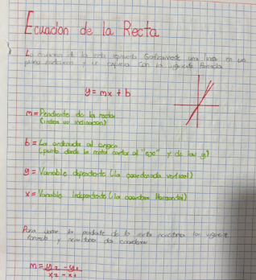
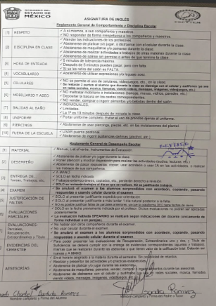
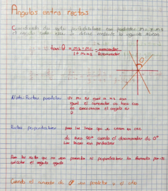
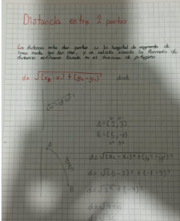
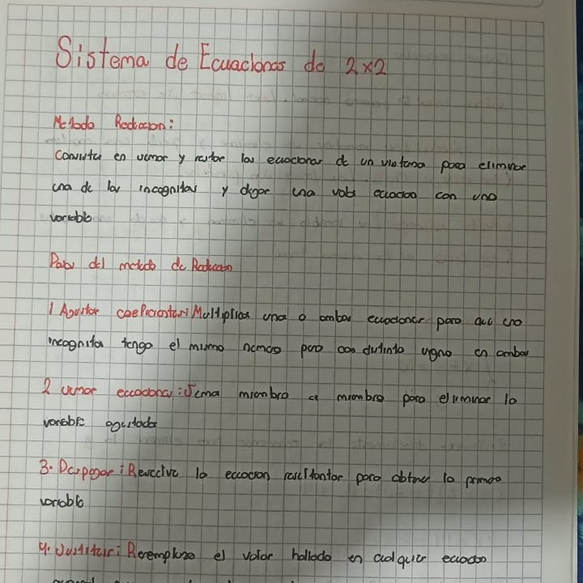
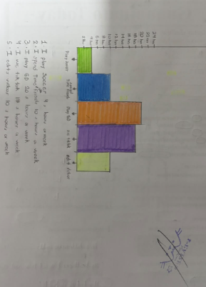
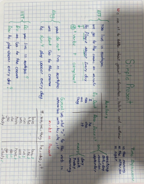
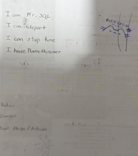

BOOTSTRAP
REGRESARBOTONES
TABLA
| a | a | a | a | a |
| a | a | a | a | a |
| a | a | a | a | a |
| a | a | a | a | a |
CARRUCEL



VENTANA MODAL
FORMULARIO
ACORDEON
UNO

DOS
TRES

CARD
Fotito
NO SE QUE PONER
FOTITO
TAMPOCO SE QUE PONER
XD
NAV BAR
TABS
TOSTADA
ICONOS
MENU
SCROLLSPY
WINDY LANDSCAPE
Windy Landscape es un nivel de tipo Insane Demon del videojuego Geometry Dash, creado por el usuario WOOGI1411 y verificado originalmente por GuitarHeroStyles
FUTURE FUNK II
Future Funk II es un nivel de tipo Insane Demon en Geometry Dash, creado y publicado por JonathanGD y verificado por mbed Es la secuela directa del popular nivel Future Funk. Aunque algunos jugadores lo consideran uno de los Insane Demons más accesibles, el final (especialmente el tramo cercano al 99%) exige mucha precisión y control de nervios.
RADIO TOWER
Radio Tower es un nivel de tipo Extreme Demon en el modo Platformer de Geometry Dash 2.2, creado por el usuario DavidConcal
El objetivo es escalar la torre completa. Cuenta prácticamente con un solo punto de control al inicio (para evitar caminar desde el principio en cada intento), por lo que requiere mucha precisión y no permite errores.
STEPPER
- Crear cuenta
- Confirmar correo
- Actualizar perfil
- Finalizar
DRAWER
AVATAR


